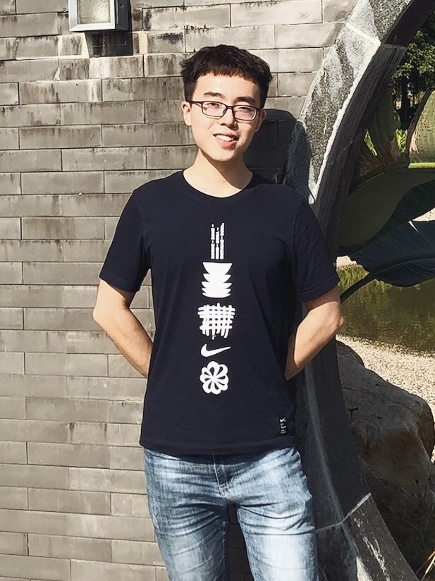

Qitian Wu
|

|  |
I am now a master student in Department of Computer Science and Engineering at Shanghai Jiao Tong University. I received my Bachelor Degrees of (I) Micro-Nano Electronic Science and Engineering and (II) Mathematics and Applied Mathematics from Shanghai Jiao Tong University.
My current researches are mainly about machine learning (including representation learning, generative models, semi-supervised/unsupervised learning, multi-task learning) and its applications in recommender system, event sequences and social networks. In particular, my current projects focus on unifying the explicit and implicit generative models as well as learning disentangled representation for data with dependent latent factors. |
|---|
Travel
- I am now as a visiting student in Chinese University of Hong Kong, Shenzhen, at Institute for Data and Decision Analytics.
- I will attend NeurIPS conference at Vancouver, Canada in Dec. 2019. I would be very happy to meet and have a nice chat with you about some interesting ideas and related researches during the conference.
Selected Publications
-
Stein Bridging: Enabling Mutual Reinforcement between Explicit and Implicit Generative Models
Qitian Wu, Rui Gao and Hongyuan Zha
Arxiv Preprint, CoRR abs/1909.13035.
- Keywords: Deep Generative Models, Generative Adversarial Networks, Energy Model, Stein Discrepancy.
-
Learning Latent Process from High-Dimensional Event Sequences via Efficient Sampling
Qitian Wu, Zixuan Zhang, Xiaofeng Gao, Junchi Yan and Guihai Chen
In the 33th Conference on Neural Information Processing Systems (NeurIPS)
- Keywords: Event Sequence, Point Process, Relation Modelling, Graph/Temporal Attention Model.
-
Feature Evolution Based Multi-Task Learning for Collaborative Filtering with Social Trust
Qitian Wu, Lei Jiang, Xiaofeng Gao, Xiaochun Yang and Guihai Chen
In the 28th International Joint Conference on Artificial Intelligence (IJCAI)
- Keywords: Collaborative Filtering, Network Embedding, Multi-task Learning, Bayesian Optimization.
-
Dual Sequential Prediction Models Linking Sequential Recommendation and Information Dissemination
Qitian Wu, Yirui Gao, Xiaofeng Gao, Paul Weng and Guihai Chen
In the 28th ACM SIGKDD International Conference on Knowledge Discovery and Data Mining (KDD, Research Track)
- Keywords: Sequential Recommendation, Information Diffusion, User Behavior, Semi-supervised Learning.
-
Dual Graph Attention Networks for Deep Latent Representation of Multifaceted Social Effects in Recommender Systems
Qitian Wu, Hengrui Zhang, Xiaofeng Gao, Peng He, Paul Weng, Han Gao and Guihai Chen
In the 30th World Wide Web Conference (WWW, Oral Presentation)
- Keywords: Social Recommendation, Graph Neural Networks, Multi-Armed Bandit, Policy Gradient.
-
EPAB: Early Pattern Aware Bayesian Model for Social Content Popularity Prediction
Qitian Wu, Chaoqi Yang, Xiaofeng Gao, Peng He and Guihai Chen
In the 18th IEEE International Conference on Data Mining (ICDM)
- Keywords: Information Diffusion, Popularity Prediction, Bayesian Networks, Structure Searching.
-
Adversarial Training Model Unifying Feature Driven and Point Process Perspectives for Event Popularity Prediction
Qitian Wu, Chaoqi Yang, Hengrui Zhang, Xiaofeng Gao, Paul Weng and Guihai Chen
In the 27th ACM International Conference on Information and Knowledge Management (CIKM)
- Keywords: Popularity Prediction, Point Process, Feature Driven Model, Adversarial Training.
Industry Experience
Selected Awards
Activity

|

|
2019.05: I gave an oral presentation about our work in WWW'19 conference at San Francisco, USA. |

|

|
2018.11: I attended ICDM'18 conference held at Singapore and gave an presentation about our work. |